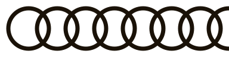
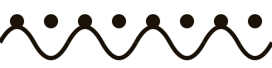
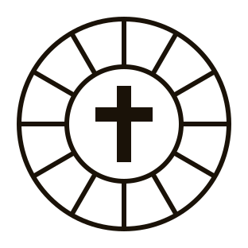
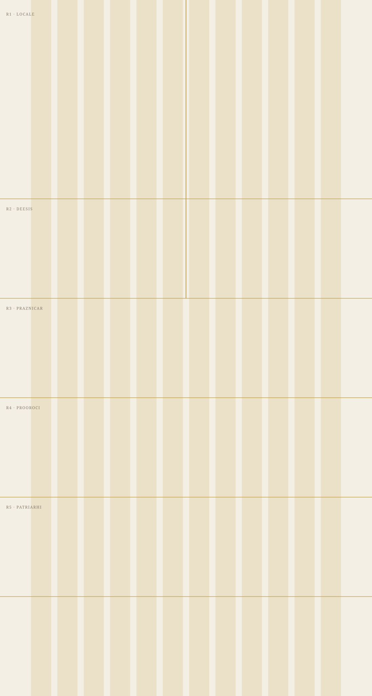
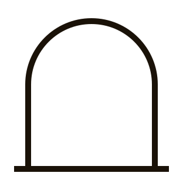
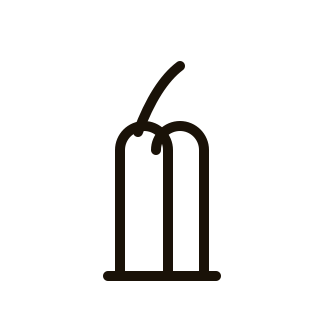
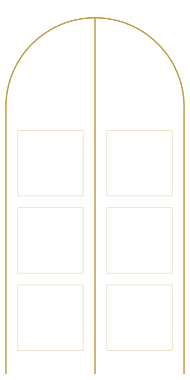
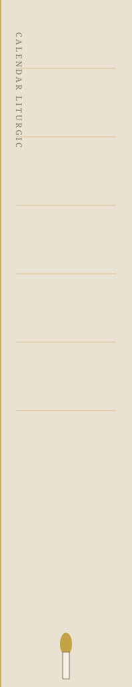

Saharna — constructed set · 17 assets · 0 credits

border-interlace.svgborder-meander.svg
border-vine.svg
calendar-wheel.svgcross-budded.svgcross-greek-pattee.svgcross-orthodox.svg
grid-iconostasis.svg
mark-arch.svgmark-bell.svgmark-book.svg
mark-hands.svgmark-lamp.svgmark-pin.svgregister-rule.svg
royal-doors.svg
votive-rail.svg